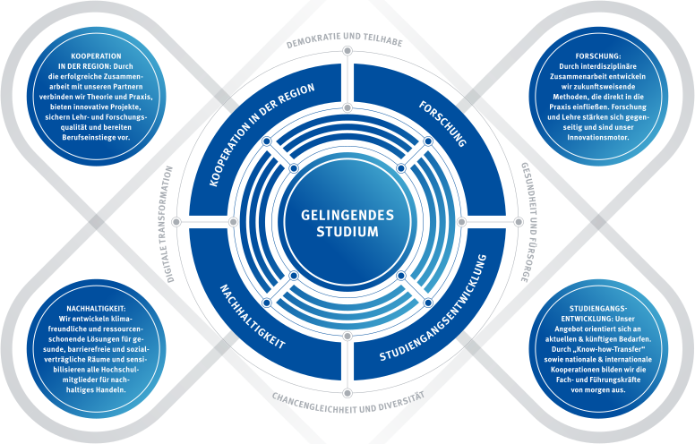
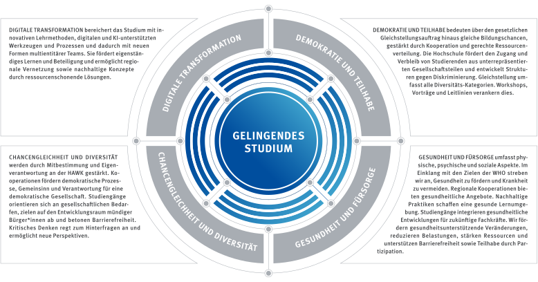
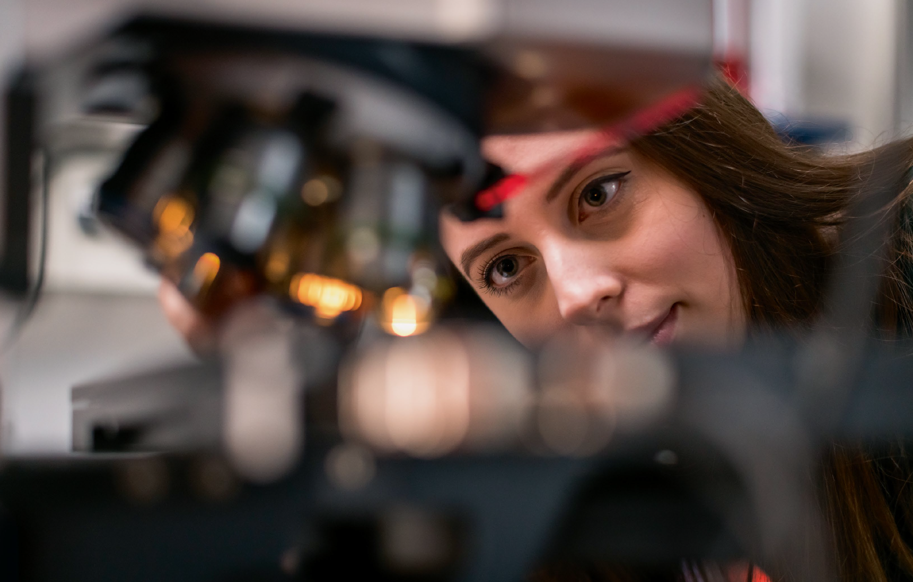

HAWK 2030
„Gelingendes Studium" in das Zentrum eines Hochschulentwicklungsplans einer Hochschule für angewandte Wissenschaft und Kunst zu stellen, scheint auf den ersten Blick wenig innovativ. Was sollte daran neu sein? Haben wir das nicht schon immer gemacht? Die Antwortet lautet „Jein". Ja – Studierende stehen schon immer im Zentrum der Vorhaben. Nein – nicht bis zur letzten Konsequenz. Eine Hochschule vom gelingenden Studium aus zu denken, erfordert zum einen eine Auseinandersetzung mit der Frage, was unter diesem Begriff zu verstehen ist und zum anderen das in Beziehung setzen aller Aufgaben der Hochschulen. Die Frage, was unter gelingendem Lernen und einer qualitativ hochwertigen Lehre grundsätzlich und konkret zu verstehen ist, ist dabei nicht abschließend zu beantworten bzw. sollte auch nicht abschließend beantwortet werden.
Sie stellt für eine Hochschule vielmehr eine dauerhafte Entwicklungsaufgabe dar. Die „Charta guter Lehre"1 des Stifterverbands für die Deutsche Wissenschaft bezeichnet den Prozess insofern zutreffend als eine „Annäherung." Unser Qualitätsverständnis beinhaltet dementsprechend, dass wir uns als Hochschule diese Frage systematisch immer wieder aufs Neue stellen, uns dieser annähern und die jeweilige Antwort in einem dauerhaft institutionalisierten, lebendigen Diskurs, an dem alle Statusgruppen mit ihrer jeweils spezifischen Perspektive beteiligt sind, formulieren. Die Frage nach der Qualität von Studium und Lehre und die vielfältigen Antworten darauf bilden so den Motor der ständigen Qualitätsentwicklung an der HAWK.1 Bettina Jorzik (Hrsg.): Charta guter Lehre. Grundsätze und Leitlinien für eine bessere Lehrkultur. Essen: Stifterverband für die Deutsche Wissenschaft 2013.

GELINGENDES STUDIUM
Ein gelingendes Studium kombiniert Theorie und Praxis und bereitet Studierende umfassend auf die berufliche und gesellschaftliche Zukunft vor. Es berücksichtigt individuelle sowie gemeinsame Bedürfnisse und strebt hohe Qualitätsansprüche für Studium und Abschluss an.
Wichtige Themen wie die Attraktivität des Studienangebots, die Unterstützung bei Studienherausforderungen und die Förderung des lebenslangen Lernens werden aktiv angegangen. Lehrende absolvieren Fortbildungen, um die Studierenden bestmöglich zu unterstützen, während Studierende eigenverantwortlich und neugierig lernen und ihre Studienorganisation im individuellen Bereich selbst gestalten.
Wichtige Themen wie die Attraktivität des Studienangebots, die Unterstützung bei Studienherausforderungen und die Förderung des lebenslangen Lernens werden aktiv angegangen. Lehrende absolvieren Fortbildungen, um die Studierenden bestmöglich zu unterstützen, während Studierende eigenverantwortlich und neugierig lernen und ihre Studienorganisation im individuellen Bereich selbst gestalten.
Das Studium fördert kritisches Denken, Teamfähigkeit und die praktische Anwendung wissenschaftlicher Methoden. Studierende nehmen an Entscheidungsprozessen teil, insbesondere in der Lehre, und profitieren von projektbasierten Ansätzen, die forschendes Lernen betonen. Kooperationen mit Institutionen und Unternehmen sichern den Praxisbezug und bereiten auf den Berufseinstieg vor. Ein gelingendes Studium fördert Kommunikationsfähigkeit, Persönlichkeitsbildung und Diskursfähigkeit und integriert innovative, digitale Werkzeuge sowie generative KI-Systeme. Trotz notwendiger Veränderungen bleibt das Ziel, optimale Lernbedingungen zu schaffen und zukunftsweisende berufliche Fähigkeiten zu entwickeln, zentral in der Hochschulstrategie.
Studieninteressierte und Studienanfänger*innen werden jeweils fachlich, sozial und organisational integriert.
1.
Zielbereich
Bis 2030 transformiert sich die gesamte Hochschule in ein praxisnahes, interdisziplinäres und gesamtheitlich orientiertes Umfeld und etabliert überwiegend lernfortschrittsbezogene Prüfungen.
2.
Zielbereich
Studierende werden als kompetente Fachkräfte und verantwortungsbewusste Persönlichkeiten in die Berufswelt entlassen.
3.
Zielbereich
QUERSCHNITTSTHEMEN
In der modernen Hochschullandschaft sind digitale Transformation, Demokratie & Teilhabe, Chancengleichheit & Diversität und Gesundheit & Fürsorge eng mit gelingendem Studium, regionaler Kooperation, Nachhaltigkeit und Studiengangsentwicklung verknüpft. Diese Themen schaffen eine ganzheitlich akademische Umgebung für zukunftsorientierte Bildung und aktive gesellschaftliche Beteiligung.

KURZPORTRAIT
Die Hochschule für angewandte Wissenschaft und Kunst (HAWK) positioniert sich als interdisziplinäre und praxis- sowie forschungsorientierte Hochschule mit starkem regionalen Netzwerk.
Wir sind der unterstützende Entwicklungsraum für die Bildungslaufbahn junger Menschen, mit dem Ziel sie als kompetente Fachkräfte und verantwortungsbewusste Persönlichkeiten in die Gesellschaft zu entlassen.



50 Jahre anwendungsorientierte Lehre
Trotz der Erweiterung ihrer Aufgaben in den letzten 50 Jahren bleibt der Fokus auf anwendungsorientierter akademischer Lehre bestehen. Sie bietet dank eines breiten Fächerspektrums viele interdisziplinäre Ansätze und ist in Industrie, Wirtschaft, Handwerk sowie im Sozial- und Gesundheitswesen gut vernetzt. Die hervorragenden Lehr- und Lernangebote in Werkstätten, Skills Labs und (Real-)Laboren unterstreichen ihren Praxisbezug.
MEILENSTEINE
Hier muss noch getextet werden – et molupidi quo blaborum et, experum quaes vent optat alitis seque iunto maximod quo officto reperch ilitam, voluptisqui tetur? Ra perspelenda et la nosapel mi, sum nobitatem in cupiducides ius,
nemolen delliae experrovit fugit, sinit que doluptaqui sunt hil iusa dolessitiis estrum ne vit quatem ad et res id unt a natusap eratem qui con repratum quamet esedict endust elibus abo.
WISSENSSPEICHER
Die Hochschule stellt all ihren Mitgliedern und in einem zweiten Schritt der Öffentlichkeit, einen Wissensspeicher zur Verfügung, der die Ergebnisse aus Forschung, Praxis und Transfer intuitiv und vernetzt zugänglich macht. Der WISSENSSPEICHER wird somit zu einem WISSENSSCHAFFER, da durch die nun möglichen Interaktionsformen zwischen Menschen, Menschen und Maschinen als auch digitalen Systemen untereinander erweitertes Wissen generiert und nutzbar gemacht wird.
Die Website „Aus der Praxis" wurde erstellt, um eine Übersicht über die vielfältigen interdisziplinären Projekte zu geben.
1.
Website „Aus der Praxis"
Die Projekte werden in einen Katalog überführt. Er wird evaluiert, weiterentwickelt und dann um Projekte zu allen Bereichen des übergeordneten Ziels („Gelingendes Studium") sowie Forschungsprojekte und Paper erweitert.
2.
Katalogisierung und Evaluation
Die Bereitstellung der Dokumentation soll an die Mediathek des virtuellen Campus der HAWK gekoppelt und um weitere Darstellungsformate (Videos, interaktive Workspaces) ergänzt werden.
3.
Mediathek und Interaktion
All diese Schritte basieren auf der Entwicklung von niedrigschwellig einsetzbaren Formularen/Templates, die es den Hochschulmitgliedern erlauben, Ergebnisse aus Forschung, Praxis und Transfer hochzuladen sowie parallel auf der Vektorisierung der Daten, um eine Personalisierung der Suche durch das hauseigene KI-Ökosystem HAWKI zu ermöglichen.
+
Diese Art der Dokumentation wird ergänzt um einen „Tag des Gelingenden Studiums" und weitere Maßnahmen, die über die reine Projektdokumentation hinausgehen und diese vielmehr erfahrbar machen.
+